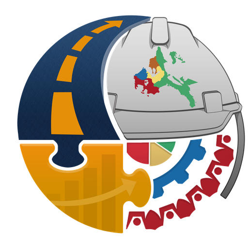

The challenge
Disconnected spreadsheets and Drive folders made it difficult to verify requirement histories consistently across LGUs, programs, and project milestones.

DILG Laguna PDMU WorkspaceResearch & system overviewDILG LAGUNA · PROJECT DEVELOPMENT AND MANAGEMENT UNIT
Record, review, track, and hand off documentary compliance in one internal system for DILG Laguna PDMU.

THE MONITORING CONTEXT
DILG Laguna PDMU · 30 LGUsDILG Laguna PDMU monitors documentary compliance across 30 local government units for critical national infrastructure and non-infrastructure programs.
In DILG Laguna PDMU, compliance monitoring previously relied on disconnected spreadsheets and shared Google Drive folders. Staff had to cross-reference multiple files to confirm submission dates, review notes, and pending documentary items before seeing the operational picture.
When compliance falls behind, preparing and issuing Notices of Non-Compliance on a 15-day notification cadence created significant administrative overhead. While national systems like SubayBAYAN track physical progress and financial disbursements, they do not provide provincial-level documentary intake checklists, review feedback, or regional handoff bundling.
See how the workspace addresses thisDisconnected spreadsheets and Drive folders made it difficult to verify requirement histories consistently across LGUs, programs, and project milestones.
Design, develop, and evaluate a web-based platform that consolidates documentary intake, compliance tracking, and regional transfer in one system.
Develop iteratively with PDMU personnel and field officers, validate functionality through black-box testing, and evaluate user acceptance.
LIFECYCLE WORKFLOW
End-to-end documentary complianceA structured four-phase workflow built specifically around DILG Laguna's operational mandate.
Define project profiles and compliance matrices across programs including SGLG-IF, LGSF-SBDP, LGSF-GEF, and LGSF-SAFPB. Ingest existing Excel records through automated spreadsheet import and column mapping.
Ingest incoming documentary submissions into assigned requirement slots. Optical Character Recognition (OCR) and Qwen-powered document matching propose classifications, while review checklists guide staff approval decisions.
Track impending deadlines, calculate compliance percentages, and automate Notice of Non-Compliance generation on 15-day review cycles. Hash-linked audit trails record every status change with officer identification.
Assemble verified submission bundles and execute direct handoffs to DILG Regional Office Google Drive repositories, archiving complete communication and verification histories.
SYSTEM INTERFACES
Key interfacesThe screenshots uses sample data and no real LGU data is used.
An operations dashboard bringing project counts, compliance indicators, and program status across Laguna LGUs into a single shared view.
REPORTED FINDINGS
Evaluation results100% pass rate across 12 test cases and 13 modules evaluated by 10 IT professionals
259 correct slots out of 300 trials in the Qwen document matcher experiment
Overall TAM evaluation across 36 PDMU personnel and field officers (Highly Acceptable)
Conducted by 10 external IT professionals to verify execution across all features without access to underlying code.
Evaluated automated document classification across 30 test documents subjected to 10 independent evaluation passes (300 total trials).
“Using the system is a good improvement compared to using fragmented systems for monitoring”
Highest-rated attitude indicator with a weighted mean of 4.42.
SYSTEM BOUNDARIES & GOVERNANCE
Scope, limits, and human-in-the-loop controlsClear boundaries define how DILG Laguna PDMU Workspace functions within provincial operations.
The system is built specifically for DILG Laguna PDMU staff and municipal/city field officers. Local government units (LGUs) do not hold direct submission accounts; field officers and PDMU staff record, verify, and review submissions on behalf of local governments.
The workspace works alongside DILG's national SubayBAYAN system rather than replacing it. SubayBAYAN monitors physical completion, expenditure, and geo-tagged site photos; DILG Laguna PDMU Workspace governs localized documentary intake checklists, review feedback, and regional handoff packages.
The manuscript explicitly delimits the system scope:
“AI suggests. People decide.”
Automated OCR and document matching provide advisory recommendations only. Every compliance decision, requirement approval, and regional handoff endorsement remains strictly with authorized human personnel.
Role-based access control and hash-linked audit trails log every file upload, review action, and notice generation with actor identification and timestamps.
CHAPTERS 1–5
Research documentation guideExplore a concise overview of the five thesis chapters. These summaries outline the study; they do not reproduce the complete manuscript or confidential operational records.
Read / print research briefEstablishes the fragmented monitoring context across separate spreadsheets and Drive folders, the need for a centralized internal platform, and the objectives of designing, developing, and evaluating DILG Laguna PDMU Workspace for DILG Laguna.
Examines related literature and technical systems in compliance monitoring, document management, OCR/NLP integration, and government information platforms to situate the project's technical contribution.
Details the descriptive developmental research design, Agile development lifecycle, system architecture, black-box testing procedure with 10 IT professionals, Qwen matcher experiment across 300 trials, and TAM evaluation across 36 respondents.
Presents the implemented modules, functional test results (100% pass across 147 steps), document matcher metrics (86.33% exact-slot match), and TAM survey findings (4.30 grand mean, with 4.42 for the fragmented systems replacement indicator).
Summarizes project outcomes, confirms that the system fulfills its core operational goals, and outlines recommendations for future development—including real-time status feedback, historical navigation, and structured AI output presentation.
THE TEAM
College of Computer Studies · LSPU
Bachelor of Science in Information Technology, major in Web and Mobile Application Development
College of Computer Studies · Laguna State Polytechnic University, Santa Cruz Campus
DILG Laguna PDMU WORKSPACE
The web-based system is available at dilgpdmu.tech for authorized DILG Laguna personnel.